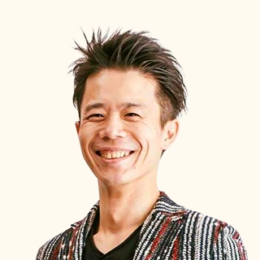
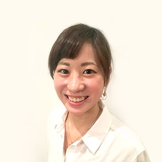
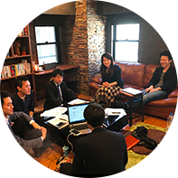
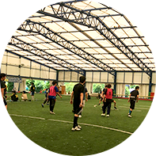

あなたはフリーランスに対して、
こんな思い違いをしていませんか？
- 「高いスキルが必要だから、自分には難しそう…」
- 「収入が安定していなさそう…」
- 「お客さまとのやりとりや、事務手続き全て自分でやらなければいけない…」
- 「報酬は高いけど、拘束時間が長いんじゃ…？」
- 「自分で勉強しないといけないから、キャリアアップは難しそう…」
- 「安定して仕事をもらえないんじゃ…？」
- 「確定申告が難しそうで、私には無理…」
どれも、「いいえ」です！
「収入が上がった！」「自由な時間が増えた！」「キャリアアップした！」
「未経験でも現場に入れた！」「親身になって聞いてくれるので何でも相談しやすい！」
弊社では、エンジニア一人一人のキャリアアップを真剣に考えているからこそ、
専属率87.1％という高い満足度を得ています。
この事実に目を通すまで、登録フォームに入力しないでください。
Peachでフリーランスになると…
- Peachでフリーランスとして働くと、収入が大幅に上がる可能性も？！
- 「がっつり働きたい」「時短で働きたい」など、お好きな勤務形態で働く事ができます。
- 「スキルに不安が…」という方や「もっとキャリアアップしたい！」という方も、
ご自身のスキルに合った案件を選べます。 - 素早い対応で、案件をご紹介できます！最短1日で案件成約も？！
- 案件が成約してからも、より良い仕事環境にするために定期的に会ってサポートさせていただきます！
- 今後のキャリアに悩んでいる方も、
プロのキャリアコンサルタントに相談しながらキャリアアップできます。 - まずは無料でご相談できます！
代表 尾崎からのメッセージ
はじめまして、Peach株式会社 代表の尾崎です。
私は仙台一高出身で、千葉大学の工学部に入学を機に上京しました。
千葉の大学を受験した理由は、東京に憧れたからです。
でも東京は都会すぎてビビってたため、千葉を選びました（笑）
仙台から見ると東京も千葉も同じように見えたのです。
初めて西千葉駅を降りた時、仙台より全然田舎じゃん！
とびっくりしたのをよく覚えてます。
晴れて男子校を卒業し、夢の共学の大学に進学することができたので、
爽やかに大学時代を謳歌しようとテニスサークルに入りました。
ところが、入ったテニスサークルの先輩は男性ばかりで、気がつくと飲み会でも瓶ビール以外は飲んではいけないという厳しい掟がありました。
しばらく経つと、そんな洗礼にも慣れ毎日勉強もせず、朝まで友達と遊んでいるような日々を過ごしていました。
みんなが行くからという安易な理由で大学院への進学を選びましたが、どうしても研究が好きにはなれず、早く就職した大学の同期がとても羨ましかったです。
なので、就職活動は本気で頑張りました。
今の時代はITだと勝手に思い込んで、IT業界の会社をたくさん受けました。
就職活動の面接で、多くの会社の面接担当者の方から『なんでうちの会社に入りたいの？』と聴かれ、その時初めて自分がやりたいことはなんなんだろうと考え始めました。
すごく大きな大企業よりも小さめの会社で活躍したい。
とは言え、ベンチャー企業に就職するほど勇気はない。
人を笑顔にできる仕事をしたい。
自分は社会で通用するのだろうか。
人に誇れるような専門性を身につけたい。
就職したとしてもちゃんと朝起きて通勤できるのだろうか。
そんなことを考えていました。
たくさん見学した会社の中から選んだ会社は、一年目から手を挙げればなんでもやらせていただけるような、自由な社風のソフトウェアメーカーでした。システムエンジニアとして就職しました。
大学院時代は、応用化学という分野の研究テーマを一応持っていましたが、学校に行くこともあまりなく、ひたすら遊んでいたので、社会人になりたての頃は、早く同期に追いつけるようになりたいと思い必死に取り組みました。
研修を終えて、理想の上司の元で働くことが決まった時はテンションMAXでした。
2年目になり、新卒向けの製品研修をしていた時に事件が起こりました。
中学や高校からコンピュータが大好きで自分でいろいろと勉強していた後輩からの質問の意味がわからなかったのです。
一年間、早く同期に追いつきたいと思って平日の夜も土日も勉強していたのにも関わらず、質問の意味すらわからなかったのです。
そりゃそうですよね。よく考えれば一年間勉強しただけの私が、何年も大好きでコンピュータに没頭していた後輩にかなうわけがありません。
ただ、当時は本当にショックでした。挫折しました。
一気に自信をなくしてしまいました。
一生懸命頑張っても世間で通用するようなエンジニアにはなれないのではないか、
自分の理想は永遠に到達することが出来ないただの夢物語なのではないか。
そんな思いでいつのまにか仕事に対する熱意もなくなってしまいました。
転職も考えました。
ただ、2年目のシステムエンジニアで、ほとんど社内研修を終えた程度のスキルで、自社の製品知識に関してもお客様の方がよっぽど詳しいことも珍しくない状態で、他社に転職する自信はありませんでした。
それから1年後、入社3年目に入った頃、知人の方から超有名大手SIerにフリーランスとして転職するお話をいただきました。
フリーランス！？
そんなの自分のスキルでできるわけないじゃんと思いましたが、『大丈夫だよ！意外と普通だから。』という知り合いの言葉を信じ、また元々お客様の顔が見える仕事がしたいと思っていたこともあり、もしかしたらいい機会なのかもしれないと思い、と転職を決意しました。
すると、業務内容はそれほど変わらないのに、なんと年収が一気に216万円も上がったんです。
「これはどうなっているんだ？！」と大きな衝撃を受けました。
その後1年間で大企業の社風を体感し、別の少し小さめの会社のプロジェクトに移ることにしました。
その頃から、システムエンジニアの友人達から『どうやって転職したの？おれもフリーランスに興味があるんだけど』などと転職の相談を受けるようになりました。
当時お世話になっていたエージェントの方や、案件を紹介するようになりました。
これが最初にフリーランスSEのエージェントになったきっかけです。
その後転職の相談に乗った友人から他の友人を紹介していただけるようになりました。
フリーランスに転向した多くの方から「収入が上がった!」「働く環境が良くなった！」「自由な時間ができた！」と、とても嬉しい報告がたくさんあったので、そういった方達をもっともっと増やすことはできないか？と思い、会社を設立したのが、この会社を始めたきっかけです。
日本人が大好きな桃のように、多くの人から愛される仕事をしたい！という想いを込めてPeachという名前にしました。
もちろん、その人のキャリアを本気で考えると、必ずしもフリーランスが適しているかどうかは人によって違うと思っています。
一度きりの人生を後悔のないように、一緒に考えていく力になれたら嬉しいです。
お客様一人ひとりに向き合ったサービス。
プロのキャリアアドバイザーだからこそできる！
「フリーランスって大変なんじゃ…？」「安定してないんじゃないの？」
フリーランエンジニアとしてのご経験がない方は、きっとこう思っていると思います。
確かに、普通に考えたらそうかもしれません。
私達は、一人一人ときちんと会ってお話をして、
キャリアプランを真剣に考えた上で、あなたに合ったキャリアプランを自信を持ってご紹介いたします。
私たちがサポートいたします！
-

尾崎 隼一郎
代表・キャリアアドバイザー私は、IT業界での転職経験が数回ありますが、現在相談を受けるのは、IT業界にとどまらず、そして転職に関することにとどまらず、多岐に渡っています。
仕事とプライベートな時間は密生に関係しております。人間関係、お金のことのここなど様々です。
気軽になんでもご相談下さい。コンビニエンスストアよりもコンビニエンスな相談相手を目指しております。 -

佐藤 十喜秀
営業・キャリアコンサルタント田舎から上京してきて、東京に出てきたときは右も左もわからない状況でした。色々な人との出会いを通じて、現在があります。
僕は出会いを通じて様々な経験をしてきました。代表との出会いはブリティッシュバーで僕から声をかけたことがきっかけでした。
経験を通じて、新たなスキル、ノウハウの獲得、自律的な成長をおこなう必要性を感じました。そして、成長の過程において自身の判断が正しいのか？といった疑問に直面することがあります。
そんな個人の悩みにフォーカスをし、悩んだ時に１番はじめに相談できる人。私はそんな人でありたいです。
一緒に課題を発見し、解決しませんか？ -
菅野 翔馬
営業・キャリアアドバイザー一緒に頑張っていきたい。
私は、19歳の頃に上京をして保険の営業、アパレル業界、建築業界など様々な仕事を経験してきました。上京して一人ぼっちだった自分がたくさんの方と出会い、支えられ今の自分があります。
学歴が高卒ということもあり今後のキャリアについて悩んだり、不安に感じる気持ちなど強くありました。現在はIT未経験からスタートして勉強を行い、ITパスポートを取得し、Rubyのプログラミングの勉強もしています。
アドバイザーとしてキャリアアップを目指すあなたと一緒に考え、ともに頑張っていける。そんな頼れる存在でありたいと考えています。
一緒にキャリアアップをしていきましょう！
サポートの流れ
下記の登録ボタンよりお申し込みフォームへ、必要事項をご入力ください。
弊社のキャリアアドバイザーよりご連絡させていただきます。
フリーランスの経験がある方はもちろん、未経験の方も大歓迎です。
まず、キャリアアドバイザーがお話を伺います。
どんな働き方をしたいのか、どんな生活スタイルを望んでいるのか、
まずはご要望をしっかりとお伺いします。
そうすることであなたに最適なプランをご提案することができます。
必要に応じて、あなたのご希望に沿ったお仕事をご紹介いたします。
もちろん、カウンセリングの上で現在のお仕事を継続することになりましたら、無理に新しいお仕事のご紹介はしないのでご安心下さい。
応募先との面談になります。
報酬額・参画時期などの調整も弊社でサポートいたします。
案件成約後も継続的にサポートいたします。
弊社で企業様との事務作業のやりとりを行いますので、
あなたは業務に集中することができます。
案件が決まった方にも定期的にお話を伺い、現場を改善するサポートをしています。
たとえば…こんな案件があります！
プログラマー向け案件
月額単価 : 〜50万円
所在地 : 東京駅周辺
希望スキル :
製造テスト経験者で、詳細設計以降を経験したい方webデザイナー向け案件
月額単価 : 〜55万円
所在地 : 品川駅周辺
希望スキル :
webデザイン経験者（2年半以上） Photoshop/Illustratorを使える方SE・PG向け案件
月額単価 : 〜65万円
所在地 : 渋谷駅周辺
希望スキル :
PHP・C#経験者（2年半以上）
もっと詳しく知りたい方は、
今すぐ、以下の緑色のボタンをクリックしてください。
ご登録すると、こんなサービスも！
さらに、ご登録いただいたエンジニアの方には、
弊社で開催している勉強会やイベントにも参加可能です。
過去には、確定申告が初めての方向けに、税理士を招いて講習会を開催したり、
皆さまの健康な体作りのためにスポーツイベントを開催しております。
さらに、女性は月に一回、無料でプロのエステティシャンの施術を受けられますし、
男性は、何度でもお見合い無料のお得な結婚相談所のご案内もございます。
- 
- 
その他にも、弊社はファイナンシャルプランナー・ファッションアドバイザー・不動産・
ヘルスケアなど、それぞれの分野のプロフェッショナルと協業しています。
みなさまが、将来に向けたお金の準備もでき、
外見もスタイリッシュになり、より健康でいられるために、
一人一人のライフスタイルに合わせて業務外でも、協業パートナーとの協力の上最適なサポートをいたします。
さらに、こんなメリットも！
電車通勤がちょっと…という方へ朗報！
首都圏にお住いの方でしたら、家から通いやすい案件もご紹介することが可能です！スキルと案件によっては、希望に沿った勤務時間で働くことも可能なので、
大切な家族と過ごす時間も作れますし、副業に時間を使うこともできます！将来は結婚して子供を育てながら仕事をしたい！という女性エンジニアの方にも、
在宅でできる仕事をご紹介できますキャリアも年収もアップできて、資産形成のプロによるアドバイスも受けられるので、
明るい将来設計ができる？！スキルシートの書き方から、面談での対応に到るまで全面サポート！
あなたの魅力を引き出します！豊富な案件数！エンジニア→マネージャー職など、
沢山の現場でスキルを磨いて、理想のキャリアプランを歩むことも可能！Peachの案件でスキルを磨いた結果、
大手企業からヘッドハンティングにあったという事例も！
ご利用いただいた方の声
緒方さん（システムエンジニア/20代/福岡県 鞍手郡出身）
会社員時代は残業が多く残業代にも上限があり、
正直、職種・部署異動がしにくい空気でした。
Peachの案件になってからは、
収入も上がりプライベートの時間も増えたのでバランスが取れるようになりました！
また、様々な分野の仕事に挑戦でき、自分のスキルも上げる事ができました。
尾崎さんとの関係性がいいので、言いたいことを伝えやすく
個人的にとても助かっています。安心して仕事に取り組めています。
坂井さん（システムエンジニア/30代/茨城県 東茨城郡市出身）
大手企業でSEをしていましたが、やりたい仕事を自分から選ぶことができないことに悩んでいました。
Peachでは、勤務形態や案件内容、自分のスキルに合った案件を選ぶことができました。
気軽に相談しやすいし、定期的に仕事状態を確認してサポートしてくれて良いと思います。
とにかく案件獲得までのフォローが丁寧でした。
諸田さん（WEBデザイナー/20代/北海道 千歳市出身）
WEB制作会社の社員だった時は残業も多く、お給料も5年で数千円ほどしか上がりませんでしたが、
Peachの案件で働きはじめると、就業時間は半分になり収入は2倍以上になりました。
フリーランスとしてやっていくのは初めてだったので、確定申告はどうしたらいいのか不安もありましたが、全て相談して解決することができました。
電車通勤が苦手だったので、家から近い案件を紹介してもらえたのも良かったです！
独身のうちはバリバリ働ける所を紹介してもらえるし、今後結婚・出産した際にも家でできるような仕事が可能で、ライフスタイルに合った働き方ができるので、将来への不安も解消されました＾＾
キャリアプランを相談して将来像が明確になったので、今はPeachでマーケティングの経験を積んでいます！
田島さん（システムエンジニア/30代/群馬県 高崎市出身）
会社員時代は、とにかく8:00-24:30終電までと就業時間が長かったです。
Peachに相談した時、まず、プログラマの職種で希望時間に働ける案件がある事に驚きました☆
「SEは忙しい、残業が多くて当たり前」というイメージを持っていたので、SEなのに定時18:30で帰っている、と言うと驚かれます！笑
収入も会社員時代の額面よりも増え、別の会社を経由してフリーランスをしていた時よりもさらに多くなりました☆
尾崎さんをはじめ、社員の方がとても熱心です。
以前、私が体調を崩し、契約先に迷惑をかけてしまった時も、尾崎さん自ら会いに来て状況を聞いてくれ、一緒に乗り越えることができました☆
更新のタイミングで契約先を切り替える時も、エンジニアの事を第一に考えて、さらに条件の良い案件を紹介していただき、感謝しています！！
原田さん（システムエンジニア/30代/兵庫県 神戸市出身）
会社員の時は、残業や休日出勤が多い職場でした。
「長く残業している人ほど仕事をしている」という雰囲気があり、自分の仕事が終わっているのにも関わらず定時で帰りにくく、時間管理が難しかったです。
フリーランスになってからは、勤務時間が契約で明確に決まるため、その勤務時間が終われば帰るように職場から奨励されるので、時間管理がしやすくなりました！！
どの職場にいってもPeachの営業さんはとても評判がいいので、多少難しい要望を言っても職場に聞き入れてもらいやすいと感じています。
よくあるご質問
Q1. 案件紹介を受けると、料金はかかりますか？
ご登録、案件紹介に至るまですべて無料でご利用いただけます。Q2. 契約方法はどうなりますか？
フリーランス（業務委託）契約を希望される方が多いですが、ご希望に合わせて調整することができます。Q3. スキルに自信がありませんが、登録しても良いでしょうか？
もちろんです。まず一度ヒアリングをさせていただきます。
その上で、将来のキャリアアップに向けて今何をすべきか一緒に考えていきましょう。Q4. 報酬が高いものだと、拘束時間が長いのでは？
その心配はいりません。勤務時間もご要望に沿ったものをご提案いたします。Q5. 給与（報酬）支払日は何日ですか？
フリーエンジニアの給与（報酬）支払い日は翌月末〜翌々月10日の支払いがほとんどです。Q6. 会社員と違って、個人事業主は大変じゃないですか？
エンジニアの皆様が業務に集中できるよう、企業とのやりとりは私たちがサポートいたします。
税金・確定申告の勉強会をはじめ、個人事業主として活躍して行くための様々な知識をつけることもできます。Q7. 案件を受注するのに最短でどれくらいかかりますか？
最短で1日、平均では5営業日程度です。Q8. 今すぐにフリーランスとして独立は考えていないのですが、登録可能ですか？
はい、もちろんです。
フリーランスになるメリット・デメリットから丁寧にお話しさせていただきます。Q9. 他社エージェントと並行利用しても大丈夫ですか？
はい、大丈夫です。
十分に検討いただいた上でご利用いただければと思います。Q10. 継続的に案件を紹介していただけるのでしょうか？
はい、もちろんです。
ご希望に応じて、案件のご紹介以外でもキャリアアップにお役に立てる情報をご提供させていただきます。Q11. 契約書類の作成など、事務手続きが全くわからないのですが、大丈夫でしょうか？
はい、大丈夫です。
契約書類作成などの事務手続きは全て私たちがサポートいたします。Q12. 今月から稼働したいのですが、可能ですか？
はい、可能です。
備考欄に「今月から働きたい」と記入していただくと、急募の案件をご紹介いたします。Q13. 在宅作業が可能な案件はありますか？
セキュリティの観点から、在宅作業が可能な案件は多くございません。
ただ、週3・4日の半常駐案件も増えておりますので、随時ご相談ください。
お断りをさせていただく場合もございます。
なぜなら…
もしあなたが以下に当てはまるなら、お断りさせていただく場合がございます。
予めご理解ください。
私たちのサービスを通して、男女問わず全てのエンジニアのキャリアアップサポートをしたい！
という思いでやっていますが、まだまだ全国展開できるほどの大きな組織ではありません。
ですから…
- × 誰にも関与されずに自分一人で仕事をしたい！
- × 人の話を聞かない、もしくは、何でも人のせいにする。
- × 首都圏以外に住んでいる。
という場合は、あなたの希望に添えないことになりますから、お断りさせて頂くことになります。
もちろん、上記に当てはまらないなら、きっとあなたに喜んでもらえると信じています。
フリーランスへになるのはちょっと不安。。。と感じている方は、
ぜひ、私たちにご相談してください。
まずは、下のボタンをクリックしてください。
〜追伸〜
エンジニアの皆さん…残業減らして年収アップしたくないですか？
「自由な時間が増えた！」
「収入が増えて、将来への不安が無くなった！」
「スキルアップして、仕事が楽しくなった！」
私たちは、こういったエンジニアの皆さんをもっともっと増やしたい！
という想いでやっています。
今はまだ規模も小さく、エンジニアへのキャリアアップサポートをメインとしていますが、
私達に関わった全ての職種の人達が、「Peachと関わって人生が良くなった！」と思えるような会社にしていきたいと思っています。
一緒に人生のステージを上げていきましょう！
あなたからの連絡をお待ちしていますね。
お会い出来ることを楽しみにしております。
長文でしたが、最後までお読み頂き、ありがとうございます。

以下のフォームにご記入いただき、
「送信ボタン」をクリックしてください。
※必要な場合をのぞいて、こちらから何度もメールすることはございませんので、ご安心ください。